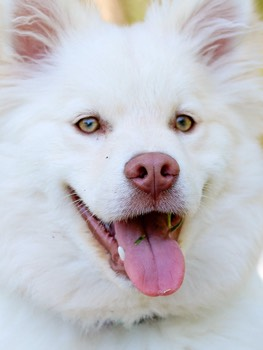
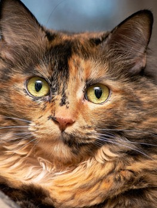

Everything you need to know about adopting, caring for, and loving your new pet.

Adopting your first dog is one of the most rewarding decisions you'll ever make — and one of the most important. We walk you through every step, from choosing the right breed to the first night at home.
Read Full Guide
Cats are wonderfully complex creatures. Here are five honest, often overlooked truths that will help you prepare for life with a feline companion — and fall even more in love with them.
Before your new pet arrives, it's essential to make your home safe. Our room-by-room guide covers everything from hiding electrical cords to securing toxic plants and choosing the right bedding.
The first month is critical. Whether it's a nervous rescue dog or a shy cat, your new companion needs patience, routine, and quiet consistency. Here's a day-by-day approach to building an unshakeable bond.
When the Okonkwo family lost their elderly Labrador, they weren't sure they were ready to open their hearts again. Then they met Max — and everything changed. A story about grief, healing, and second chances.
Scheduling your new pet's first veterinary appointment within 48 hours of adoption is one of the most important steps you can take. We explain exactly what will happen and the 10 questions every new owner should ask.
Birds and reptiles make fascinating companions — but they come with unique needs that many first-time owners underestimate. Before you adopt a parrot, gecko, or iguana, read this honest guide from our specialists.
Many rescue dogs come with baggage — anxiety, fear responses, or no training at all. Positive reinforcement isn't just kinder; it's more effective. Here's how to start, what supplies you'll need, and common mistakes to avoid.
Not everyone has space for a dog or cat — and small mammals can be incredible companions. We compare rabbits, guinea pigs, and hamsters across temperament, lifespan, care needs, and suitability for children.
Hundreds of pets are waiting for their forever home. Start your adoption journey today — it only takes a few minutes.
Apply to Adopt